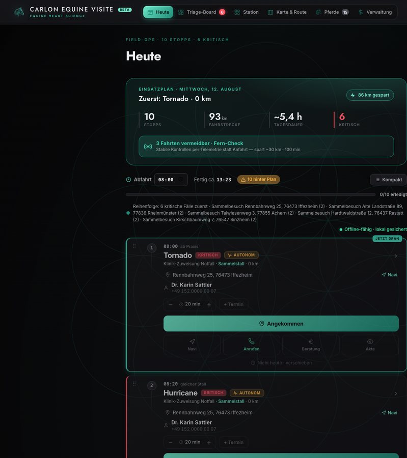
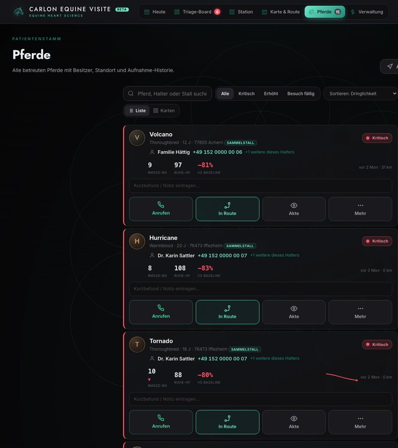
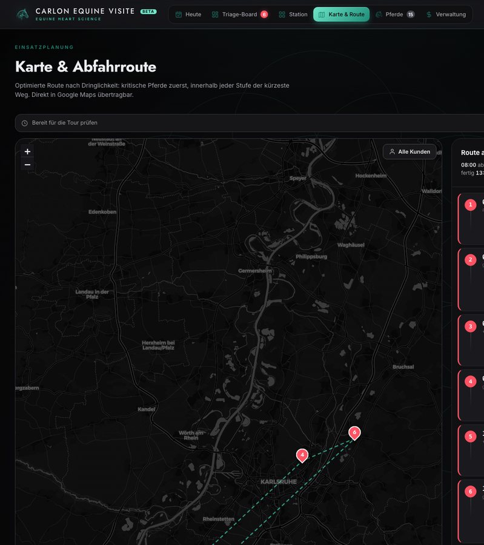
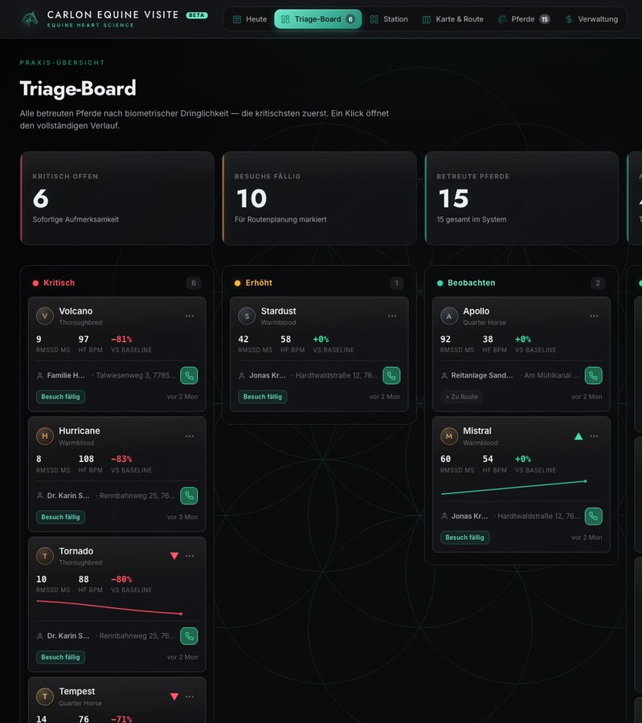
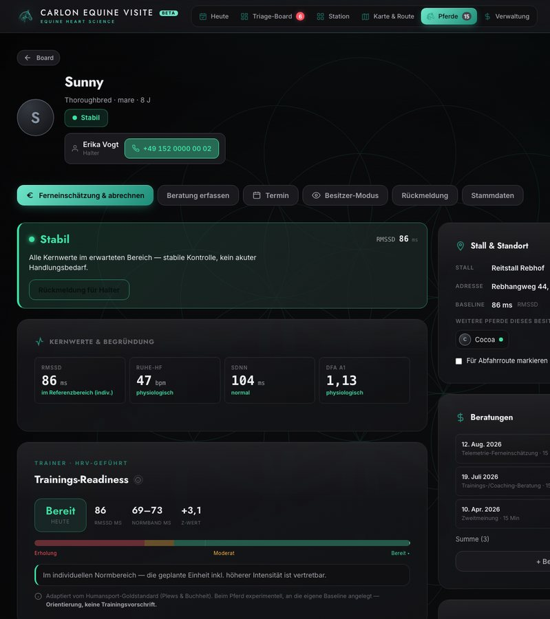
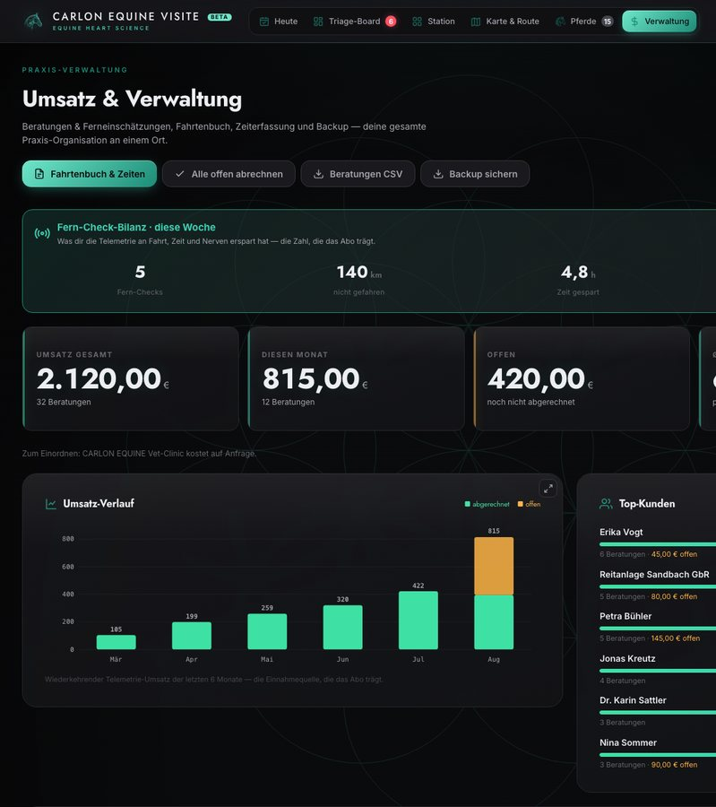

Betreuung, die nicht an der Stalltür endet.
CARLON Equine Visite ist das Gegenstück zur CARLON Equine App. Der Halter misst zu Hause mit dem Polar H10; du öffnest die Aufnahme im Browser, liest den Verlauf gegen die eigene Baseline des Pferdes und erreichst das Pferd früher. Kein Upload, kein Login — die Daten bleiben in deinem Ordner.
Für das Pferd — und für dein Urteil.
Du siehst, wer dich wirklich braucht
Der Verlauf zeigt, welches Pferd auffällt, bevor jemand anruft — die dringende Fahrt zuerst, die ruhige später. Dein Fachwissen erreicht auch Ställe, die du nicht jede Woche schaffst.
Verlauf statt Momentaufnahme
Ruhe-HRV über Wochen, gegen die eigene Baseline des Pferdes — Reha, Training und Belastung im Verlauf, für den Tierarzt zum Einordnen, nicht aus dem Bauchgefühl.
Deine Einschätzung bleibt deine
CARLON liefert die Daten und ihre Aufbereitung. Die Deutung, die Diagnose, die Entscheidung — alles bei dir. Kein Automatismus, keine Bevormundung.
Daten bleiben beim Pferd und bei dir
Browser-lokal, kein Server, keine Cloud. Du bist Verantwortlicher im Sinne der DSGVO. Nichts verlässt dein Gerät ohne dein Zutun.
Drei Schritte — vom Stall zum Befund.
Der Halter nimmt auf
Ruhe-HRV am Pferd mit dem Polar H10 — im gewohnten Stall, ohne Transport-Stress.
Du siehst den Verlauf
Das Cockpit sortiert die Pferde nach Auffälligkeit im Verlauf — das auffällige zuerst, mit Verlauf über die Zeit.
Frühe Einschätzung, dokumentiert
Ein klares Befund-PDF geht zurück an den Halter — deine Einschätzung, nachvollziehbar dokumentiert. Keine Diagnose durch die App; die Deutung bleibt bei dir.
Es plant den Tag. Du behältst das Steuer.

Die Reihenfolge schlägt sich vor — du ziehst sie zurecht.
- Der Plan setzt die kritischen Pferde zuerst und rechnet den kürzesten Weg zwischen den Stopps jeder Stufe — der Tag steht geordnet, bevor du im Auto sitzt.
- Nicht der Vorschlag entscheidet — du entscheidest. Zieh jede Karte an ihren Platz, auch bei einem vollen Tag, in der kompakten Übersicht.
- Alle Daten des Pferds auf einen Blick und der Halter einen Tipp entfernt — verspätest du dich an einem Stopp, erreichst du den nächsten Stall, ohne den Plan zu verlassen.
- Offline-fähig, lokal gesichert. Der hektische Tag wird einfacher — und nichts davon verlässt dein Gerät.


Jedes Pferd ist sein eigener Maßstab.


Dein ganzer Praxistag, an einem Ort.
Fahrtenbuch, Zeiten, Abrechnung und Backup — schon drin.
- Jede Ferneinschätzung wird zur abrechenbaren Leistung — alle offenen auf einmal abrechnen oder die Beratungen als CSV exportieren.
- Fahrtenbuch und Zeiterfassung füllen sich aus deinem Tag — Umsatz, dieser Monat, noch offen, Ø Honorar, alles auf einen Blick.
- Ein Knopf exportiert die ganze Praxis als eine Datei. Sie bleibt lokal — und du kannst sie überallhin mitnehmen.

Dein Praxistag, an einem Ort.
Zieh den ganzen Ordner rein
Ein ganzer Ordner voller CARLON-Exporte auf einmal — jede Aufnahme ordnet sich selbst dem richtigen Pferd zu.
Das auffällige Pferd steigt nach oben
Das Board sortiert nach Abweichung von der eigenen Baseline jedes Pferdes — nicht gegen umetikettierte Human-Cutoffs.
Die Route stellt sich nach Dringlichkeit
Kritische Pferde zuerst, dann der kürzeste Weg dazwischen — direkt an Google Maps übergeben.
Deine Ferneinschätzung, dokumentiert
Trag deine Einschätzung direkt am Fall ein und erfasse sie als Leistung — ein klares Befund-PDF geht zurück an den Halter.
Sprich es am Pferd, tippe später
Sprich den Befund ein — offline, lokal gespeichert. Hände am Pferd jetzt, Doku später.
Lokal — und passt auf sich auf
Das Cockpit fordert dauerhaften Speicher an, überwacht jeden Schreibvorgang und erinnert ans Backup. Ein vollständiger Praxis-Export, wann immer du willst.
Lokal by Design.
Kein Server sitzt dazwischen. Die Daten laufen vom Gerät des Halters zu deinem und zurück — CARLON sieht sie nie. Du bist Verantwortlicher; die Verantwortung, und das Vertrauen, bleiben bei dir.
Und lokal heißt nicht zerbrechlich: Das Cockpit fordert dauerhaften Browser-Speicher an, fängt jeden fehlgeschlagenen Schreibvorgang mit einem sofortigen Backup-Hinweis ab und lässt dich die ganze Praxis jederzeit als eine Datei exportieren.
Belegt, nicht behauptet · Einschätzung, keine Diagnose · Kein Medizinprodukt (MDR/FDA) · Daten bleiben lokal — du bist Verantwortlicher · kein Server, keine Cloud.
Gestalte es mit.
Wir suchen eine Handvoll Tierärzte und Kliniken, um das Cockpit am echten Praxisalltag zu bauen. Zugang zum Cockpit während der Beta, ein direkter Draht zu Jan für jede Frage.